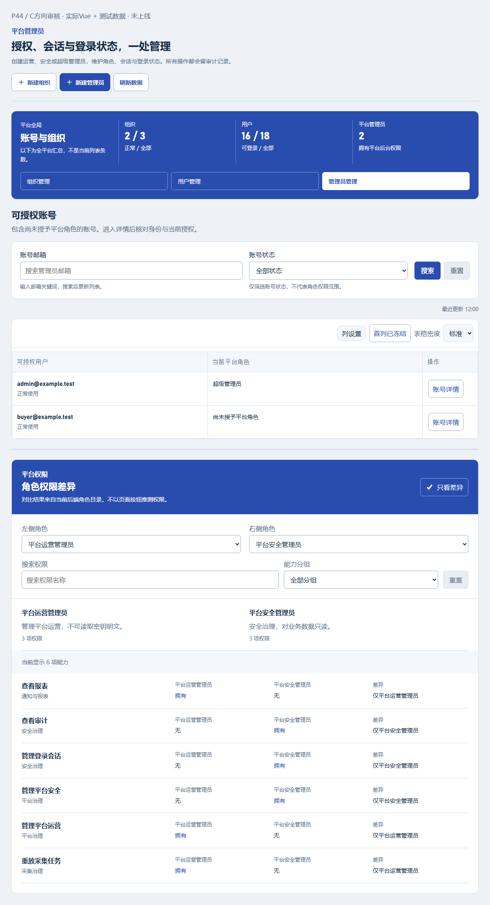
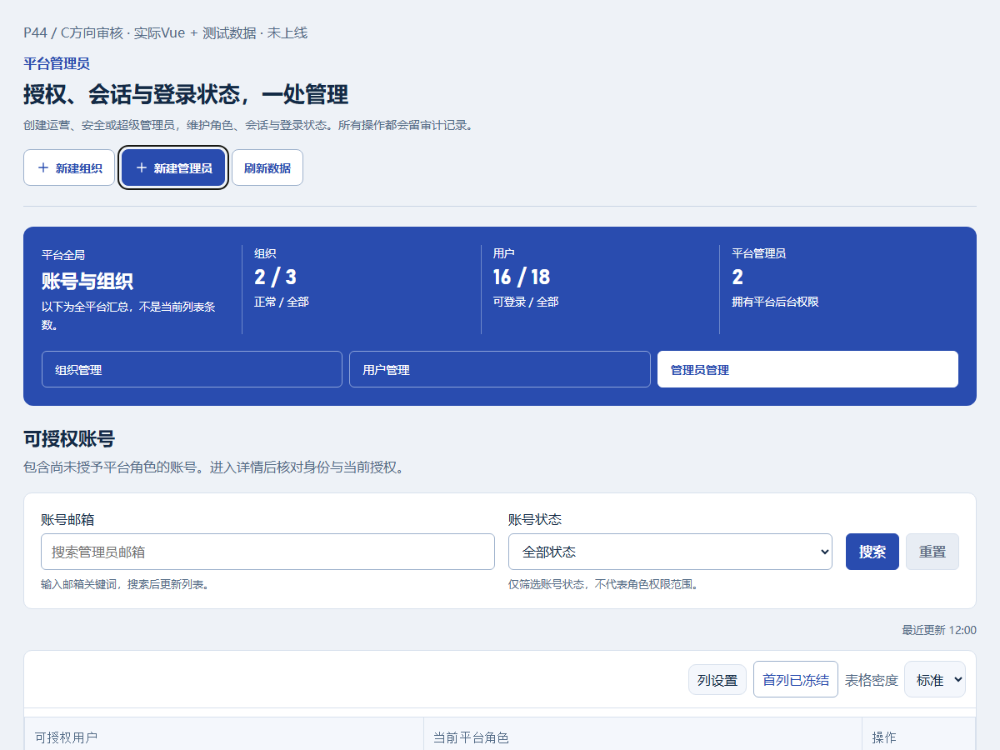
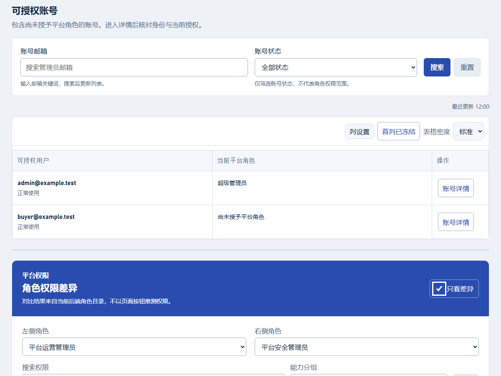
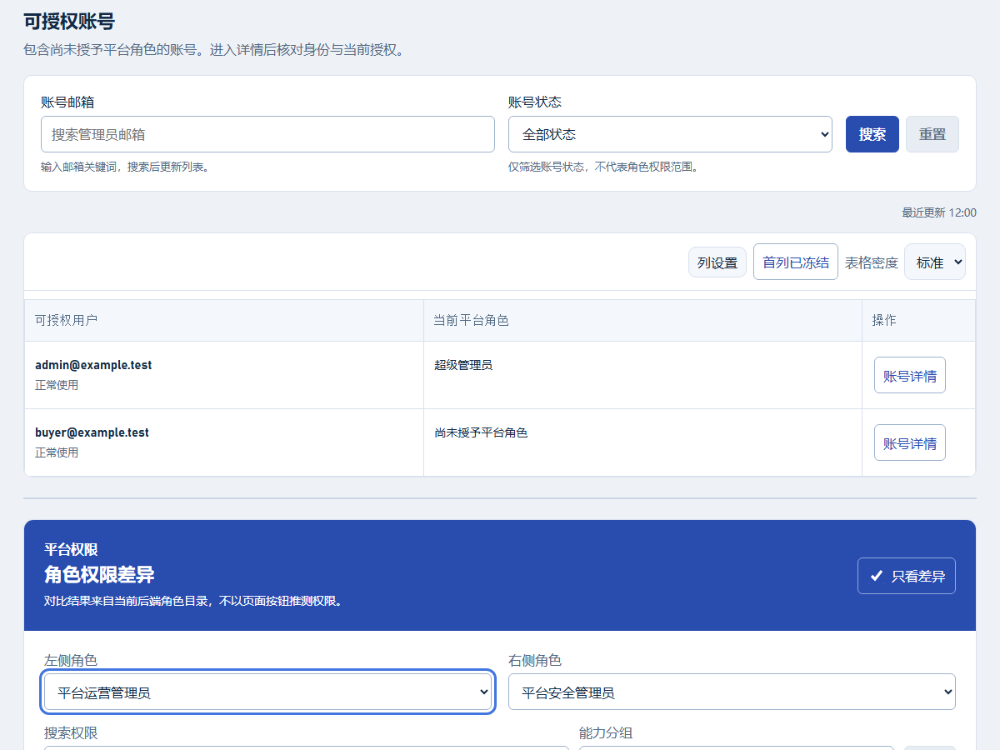
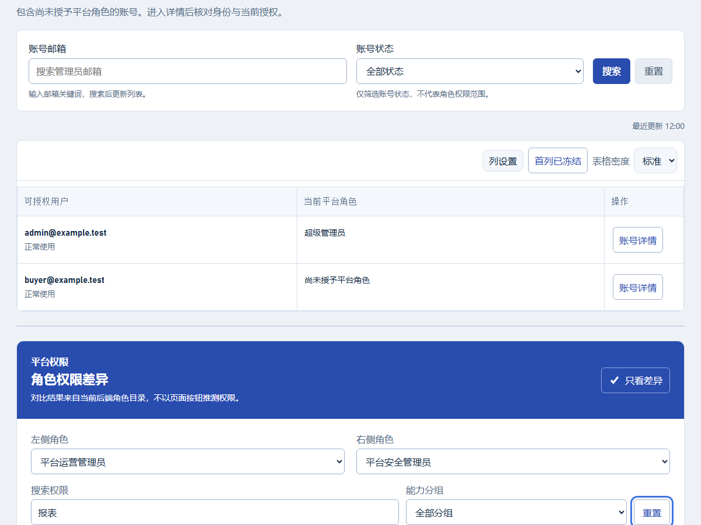
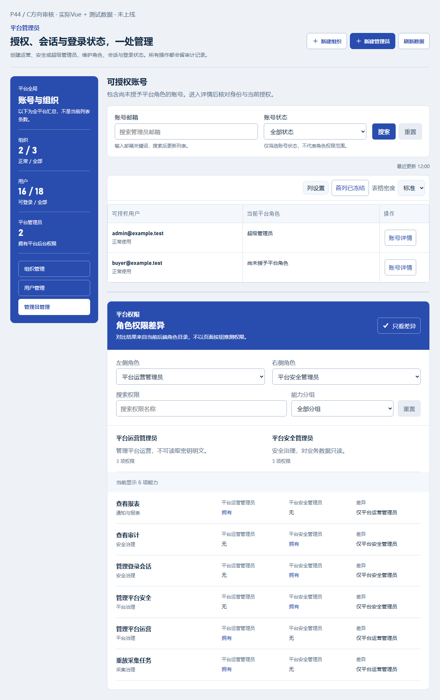
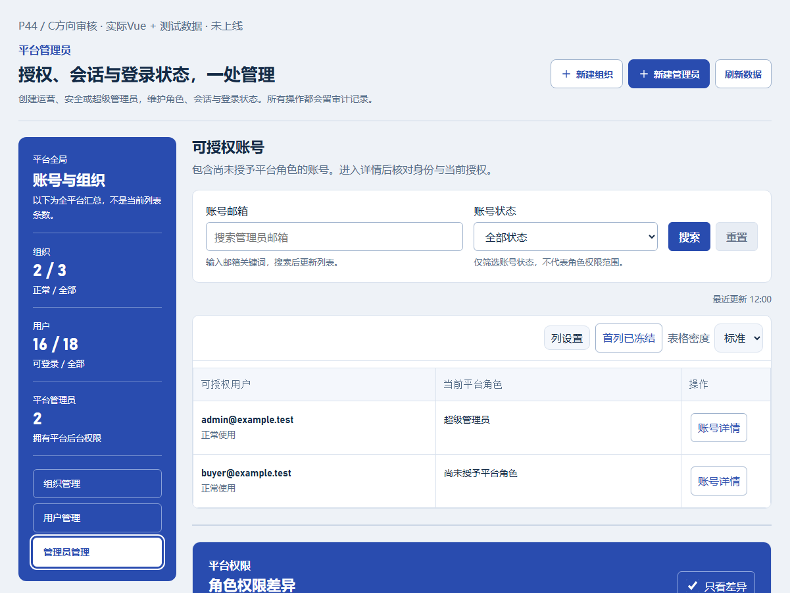
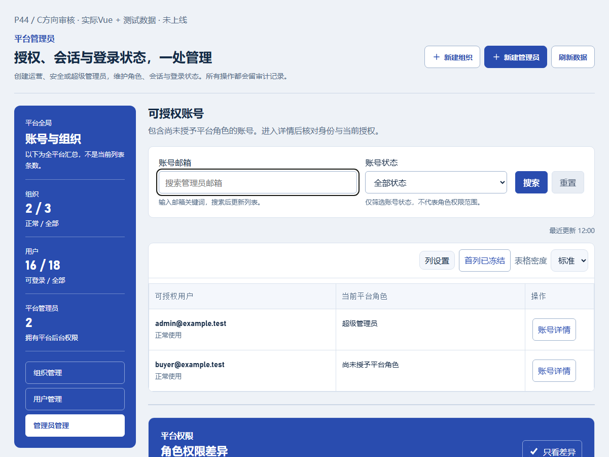
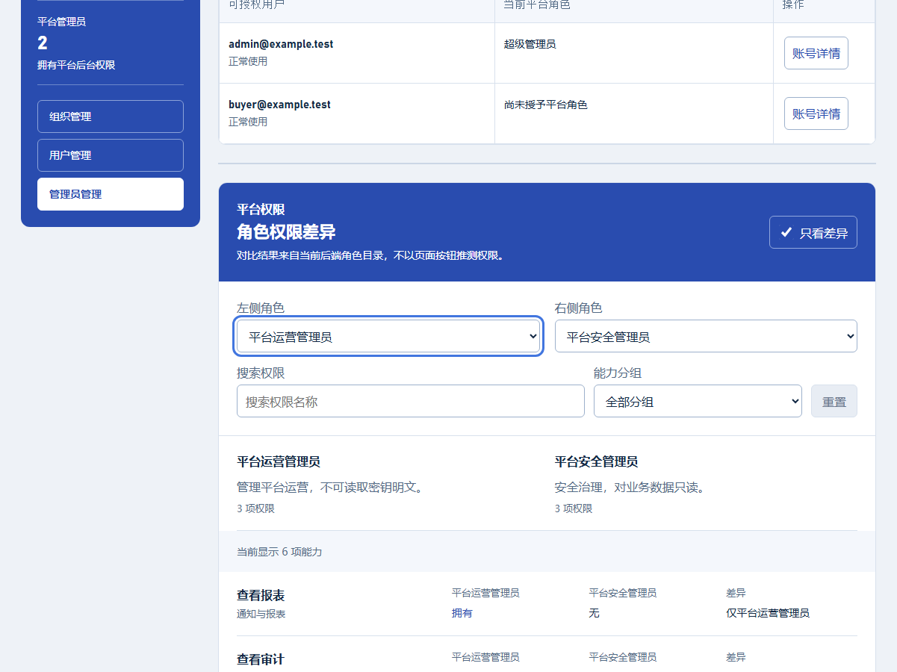
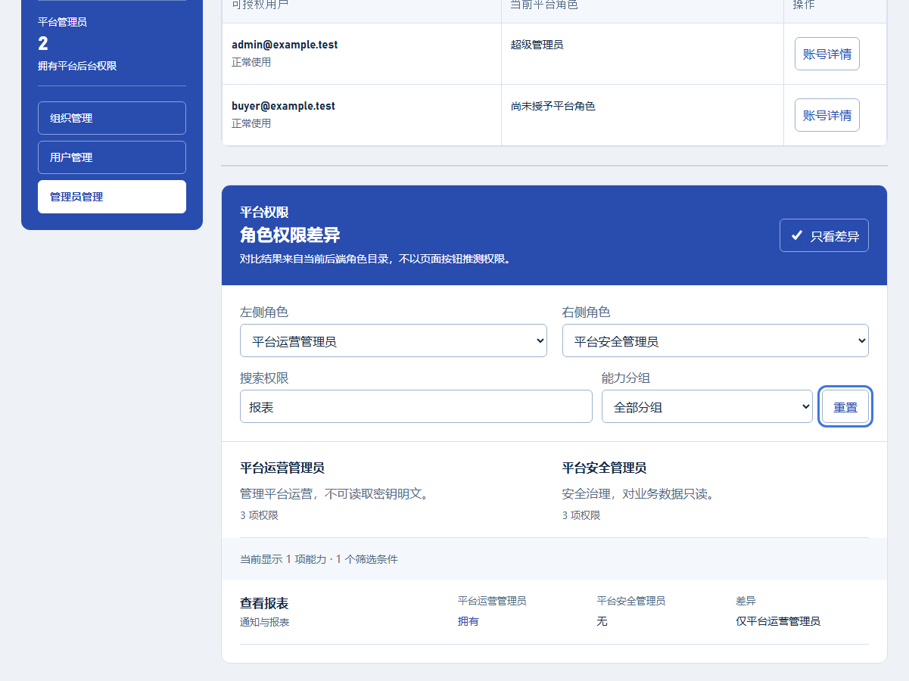

P44 1200/1201px · 断点与键盘焦点
测试数据，未上线，待用户审核。详情及比较仅证明入口组合，不代表所有子区域C设计或权限通过。
1200px · default

1200px · default-top
1200px · keyboard-create

1200px · keyboard-navigation
1200px · keyboard-email
1200px · keyboard-differences

1200px · keyboard-left-role

1200px · keyboard-reset

1201px · default

1201px · default-top
1201px · keyboard-create
1201px · keyboard-navigation

1201px · keyboard-email

1201px · keyboard-differences
1201px · keyboard-left-role

1201px · keyboard-reset
